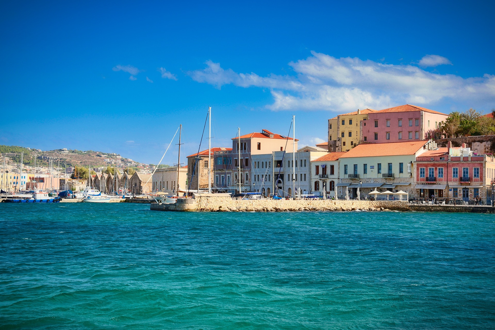
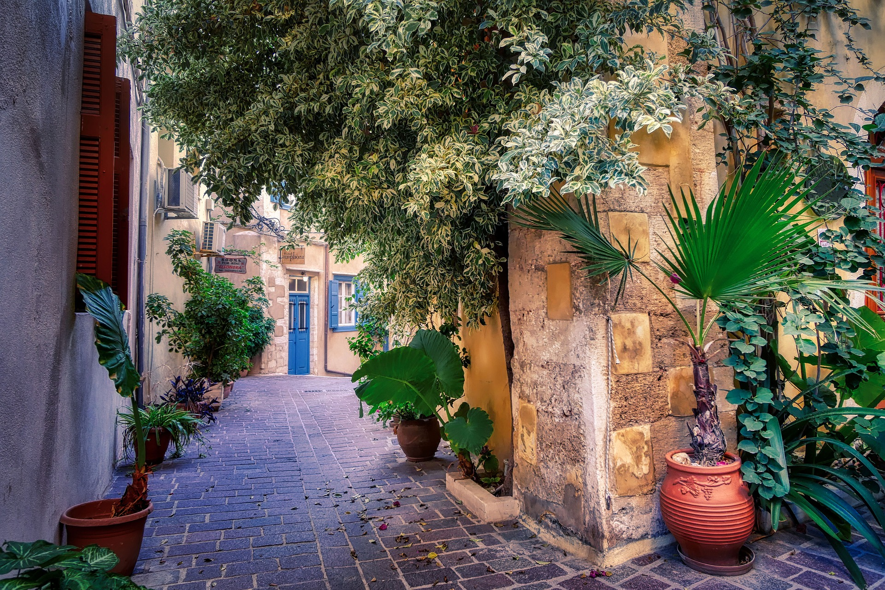
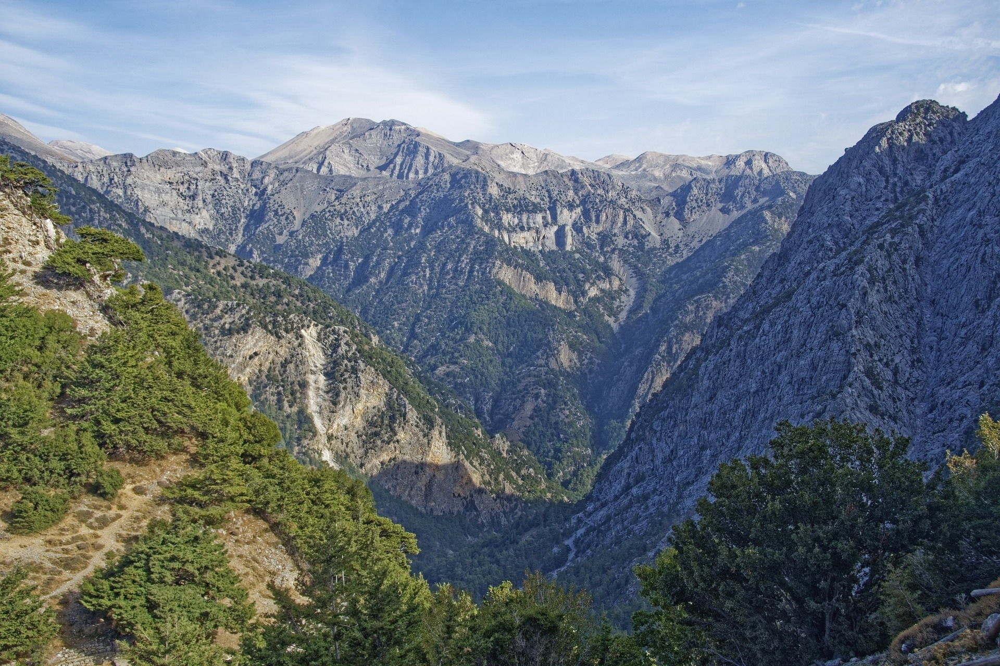
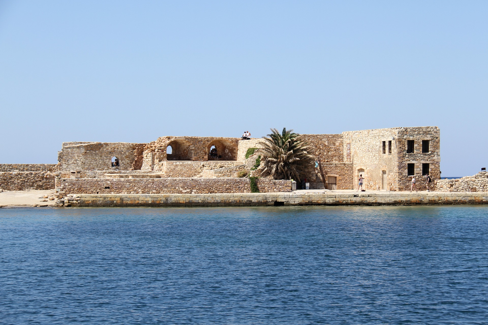

Beautiful sites of Chania  Urban Town, Sea Port Crete Mole Old Town  Greek Road, Chania Old Greek, Chania  Samaria Gorge, Crete Lakeki Village, Chania Old Town Kreta Grekland  Venetian Fort, Hania